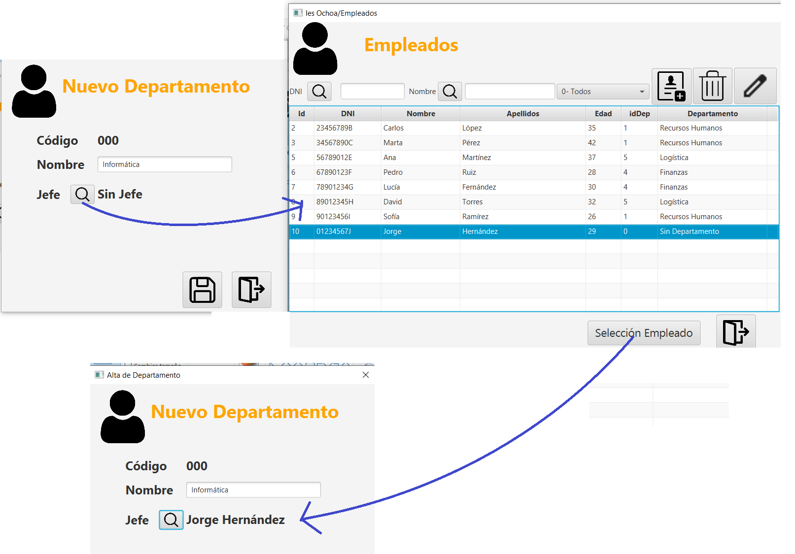

Proyecto de mantenimiento de Base de datos con JavaFX¶
Introducci√≥n¶
El objetivo será crear el mantenimiento de la siguiente base de datos en MySql
En el que un trabajador pertenece a un departamento y un departamento tiene un Jefe. Permitiremos que un trabajador no tenga departamento y que un departamento no tenga jefe dejando que puedan ser nulos dichos campos de ambas tablas.
Nota
En muchas ocasiones, para evitar trabajar con nulos, se decide crear una tupla general que represente la no pertenencia. Por ejemplo: Se crea la tupla en Departamento “Sin departamento”, y en trabajadores una persona llamada: “Sin Jefe”
La aplicación permitirá acceder al mantenimiento de Empleados y Departamentos permitiendo filtrar la información para facilitar al usuario encontrar los datos que necesite.
Aprovecharemos las ventanas de mantenimientos para poder seleccionar la información por parte del usuario en otros mantenimientos donde sea necesaria.
Resultado final¶
Tenemos el código final en el repositorio
La aplicación final tiene el siguiente aspecto
El mantenimiento de Empleado permite la creación, borrado y edición y filtrar la información para su búsqueda
La ventana de Nuevo y Edición será la misma, y creará o modificará un Empleado. Facilitará al usuario la selección del Departamento al que pertenece
El mantenimiento de Departamento permite la creación, borrado y edición.
Permite seleccionar el jefe del departamento desde el mantenimiento de Empleado
Crear la base de datos¶
En MySql o MariaDB, crear una base de datos(la llamaremos empresa) y creamos las tablas y algunos registros iniciales para probar el funcionamiento de nuestro programa. El script puede ser el siguiente
CREATE TABLE IF NOT EXISTS Departamento (
codigo INT AUTO_INCREMENT PRIMARY KEY,
nombre VARCHAR(100),
jefe INT UNIQUE
);
-- Crear tabla Empleado si no existe (sin clave foránea)
CREATE TABLE IF NOT EXISTS Empleado (
id INT AUTO_INCREMENT PRIMARY KEY,
dni VARCHAR(9) NOT NULL UNIQUE,
nombre VARCHAR(50),
apellido VARCHAR(50),
edad INT,
departamento INT
);
-- Añadir clave foránea a Empleado si no existe
ALTER TABLE Empleado
ADD CONSTRAINT fk_empleado_departamento
FOREIGN KEY (departamento) REFERENCES Departamento(codigo)
ON DELETE SET NULL ON UPDATE CASCADE;
-- Añadir clave foránea a Departamento si no existe
ALTER TABLE Departamento
ADD CONSTRAINT fk_departamento_empleado
FOREIGN KEY (jefe) REFERENCES Empleado(id)
ON DELETE SET NULL ON UPDATE CASCADE;
Añadimos unas tuplas de ejemplo para probar la aplicación
-- Insertar departamentos inicialmente sin jefe
INSERT INTO Departamento (codigo, nombre, jefe) VALUES
(1, 'Recursos Humanos', NULL),
(2, 'Tecnología', NULL),
(3, 'Marketing', NULL);
-- Insertar Empleados (jefes y empleados)
INSERT INTO Empleado (dni, nombre, apellido, edad, departamento) VALUES
('12345678A', 'Laura', 'Gómez', 40, 1), -- jefe de RRHH
('23456789B', 'Carlos', 'López', 35, 2), -- jefe de Tecnología
('34567890C', 'Marta', 'Pérez', 42, 3), -- jefe de Marketing
('45678901D', 'Juan', 'Sánchez', 38, 1),
('56789012E', 'Ana', 'Martínez', 37, 2),
('67890123F', 'Pedro', 'Ruiz', 28, 3),
('78901234G', 'Lucía', 'Fernández', 30, 2),
('89012345H', 'David', 'Torres', 32, 3),
('90123456I', 'Sofía', 'Ramírez', 26, 1),
('01234567J', 'Jorge', 'Hernández', 29, 2);
-- Asignar jefes a los departamentos
UPDATE Departamento SET jefe = 1 WHERE codigo = 1;
UPDATE Departamento SET jefe = 2 WHERE codigo = 2;
UPDATE Departamento SET jefe = 3 WHERE codigo = 3;
Crear y configurar el proyecto JavaFX¶
En IntelliJ creamos el proyecto
Es necesario añadir en module-info.java lo siguiente
Para añadir la librería jdbc de MySQL al proyecto, lo haremos con Maven
Estructura del proyecto¶
Como ya vimos en Estructura de un proyecto
Vamos a organizar el proyecto en paquetes que se adapten al patrón MVC
Creamos los paquetes siguientes:
Refactoriza cambiando el nombre tanto del fichero fxml como el controles y moviéndolos a las carpetas correspondientes
Corrige la ubicación del fichero en la clase de inicio
Cada paquete nuevo es necesario registrarlo en el fichero module-info
Nota
Es posible que IntelliJ muestre un error que se corrige cuando creamos nuevas clases en los paquetes
Los recursos de la aplicación como las imágenes, páginas CSS, fuentes...las organizaremos en carpetas:
Probar que funciona correctamente la aplicación. Es posible que tengas que comentar parte de lo anterior
Importante
Recuerda descomentarlo cuando incluyas código en los paquetes
Conexi√≥n a la base de datos¶
Definimos la clase para la conexión a la base de datos en el en el paquete db como ya vimos en el proyecto.
public class DBConnection {
// URL de conexión a la base de datos MySQL
private static final String URL ="jdbc:mysql://localhost:3306/empresa";
private static final String USERNAME = "root";
private static final String PASSWORD = "password";
private static Connection connection;
// Constructor privado para evitar instancias directas
private DBConnection() {}
// Método estático para obtener la instancia única de la conexión
public static Connection getConnection() {
if (connection == null) {
// Bloqueo sincronizado para evitar concurrencia
synchronized (DBConnection.class) {
if (connection == null) {
try {
// Establecer la conexión
connection = DriverManager.getConnection(URL, USERNAME, PASSWORD);
} catch ( SQLException e) {
e.printStackTrace();
}
}
}
}
return connection;
}
// Método para cerrar la conexión
public static void closeConnection() {
if (connection != null) {
try {
connection.close();
connection = null;
} catch (SQLException e) {
e.printStackTrace();
}
}
}
}
Mantenimiento de Empleado¶
Vamos a comenzar con el mantenimiento de Empleado.
Modelo Empleado (POJO Empleado)¶
Representará las necesidades de la aplicación para la tabla Empleado y su relación con Departamento. Decidimos mantener los datos de la tabla más el objeto Departamento al que pertenecen para facilitar mostrar la información al usuario
DAO Empleado¶
Tenemos que definir las sentencias SQL necesarias para la aplicación. Vamos a crear la clase DAO con las sentencias SQL que permitan el CRUD (Creación, Edición, Borrado y Selección) para la aplicación.

Creamos las sentencias SELECT que permitan obtener la información a mostrar al usuario incluyendo los filtros que utilizamos (no aplicamos los filtros en conjunto, se deja como ejercicio)
Vista Empleado: TableView¶
Como hemos indicado, vamos a mostrar un listado de los empleados donde podremos filtrar, crear, modificar y eliminar.
Creamos un nuevo fichero fxml y su correspondiente Controller en lo paquetes correspondientes
Nuestro primer objetivo tiene que ser poder mostrar la lista con todos los empleados
Para mostrar la lista utilizaremos un TableView de JavaFX
El TableView nos permite mostrar ObservableList que es muy parecido a un ArrayList, por lo que recuperaremos la lista de empleados de la base de datos utilizando DAO y lo cargaremos en la ObservableList y se lo asignaremos al TableView.
Para crear el TableView tenemos que darle un id y asignarle las columnas necesarias con la información que queremos mostrar en SceneBuilder. Es necesario asignar ids a las columnas también.
En el Controller, definimos la ObservableList y los tipos para cada columna que tiene que coincidir con los tipo de la clase Empleado.
En el método iniciaTableViewEmpleados, creamos la observableList, iniciamos la TableView, asociando a cada columna el nombre de la propiedad de Empleado a mostrar
Para las columnas que muestran la información del Departamento, tendremos que elegir el dato a mostrar
// Para mostrar el código del departamento, se utiliza una función lambda
// para acceder a la propiedad anidada 'departamento' y luego a 'codigo'.
tcidDep.setCellValueFactory(
param -> new ReadOnlyObjectWrapper<>(
param.getValue().getDepartamento() != null ? param.getValue().getDepartamento().getCodigo() : 0
)
);
// Para mostrar el nombre del departamento, se utiliza una función lambda
// para acceder a la propiedad anidada 'departamento' y luego a 'nombre'.
tcDepartamento.setCellValueFactory(
param -> new ReadOnlyObjectWrapper<>(
param.getValue().getDepartamento() != null ? param.getValue().getDepartamento().getNombre() : "Sin departamento")
);
Leemos la lista de empleados de la base de datos desde el DAO
try {
// Carga todos los empleados desde la base de datos y los añade a la lista observable.
listaEmpleados.addAll(EmpleadoDAO.getInstance().listAllEmpleados());
} catch (SQLException e) {
System.err.println(e.getMessage());
}
Desde el método Initialize, llamamos al método anterior, que si todo es correcto, mostrará la lista de empleados
@Override
public void initialize(URL url, ResourceBundle resourceBundle) {
iniciaTableViewEmpleados(); // Inicializa la TableView de empleados.
}
Abrir en JavaFX una nueva ventana¶
Nuestra aplicación comienza en la ventana principal que permitirá abrir el mantenimiento de Empleados y Departamentos.
Para poder abrir Empleados al pulsar en el botón correspondiente, creamos una nuevo Stage desde el View creado anteriormente.
/**
* Método invocado al hacer clic en el botón para acceder a la gestión de departamentos.
* Carga y muestra la vista de departamentos en una nueva ventana modal.
*
* @param event El evento de acción.
*/
@FXML
void onClickDepartamentos(ActionEvent event) {
// Es necesario el control de excepciones para manejar posibles errores al cargar la vista.
try {
// Cargamos la escena desde el archivo FXML que define la interfaz de departamentos.
FXMLLoader loader = new FXMLLoader(EjemploDBJavaFx.class.getResource("views/departamentos-view.fxml"));
Parent root = loader.load();
Scene scene = new Scene(root);
// Iniciamos un nuevo Stage (ventana) para mostrar la escena de departamentos.
Stage stage = new Stage();
stage.setTitle("IES Severos Ochoa/Departamentos"); // Establecemos el título de la ventana.
stage.setResizable(false); // Deshabilitamos la posibilidad de redimensionar la ventana.
stage.initModality(Modality.APPLICATION_MODAL); // Establecemos la modalidad de la ventana como modal de aplicación,
// lo que bloquea la interacción con otras ventanas de la aplicación
// hasta que esta se cierre.
stage.setScene(scene); // Asignamos la escena al Stage.
stage.showAndWait(); // Mostramos la ventana y esperamos a que el usuario la cierre.
} catch (IOException e) {
// En caso de error al cargar el archivo FXML, mostramos un mensaje de error en la consola.
System.err.println(e.getMessage());
}
}
Borrar Empleado¶
Para implementar el borrado, tenemos que:
- saber el elemento de la tabla seleccionado
- como es una acción que no tiene vuelta a atrás, queremos mostrar una alerta al usuario para que se asegure que quiere borrar el empleado
Tendremos un método que elimine el un empleado y actualice la TableView
private void borrarEmpleado(Empleado empleado) {
try {
EmpleadoDAO.getInstance().deleteEmpleado(empleado.getId());
listaEmpleados = FXCollections.observableArrayList(
EmpleadoDAO.getInstance().listAllEmpleados()
);
tvEmpleados.setItems(listaEmpleados);
} catch (SQLException e) {
throw new RuntimeException(e);
}
}
Nota
No tenemos en cuenta los filtros actuales. Se deja como ejercicio.
Selecci√≥n del empleado de la TableView¶
Para saber el elemento seleccionado de la TableView:
@FXML
void onClickBorrar(ActionEvent event) {
//obtenemos el empleado seleccionado
Empleado empleado = tvEmpleados.getSelectionModel().getSelectedItem();
Alert: Avisos al usuario¶
Mostraremos un cuadro de dialogo al usuario antes de borrar y si decide que sí, llamamos al método borrar
@FXML
void onClickBorrar(ActionEvent event) {
//obtenemos el empleado seleccionado
Empleado empleado = tvEmpleados.getSelectionModel().getSelectedItem();
if (empleado != null) {
//Abrimos un cuadro de diálogo para que confirme si borra o no
Alert alert = new Alert(Alert.AlertType.CONFIRMATION);
alert.setTitle("Borrar Empleado");
alert.setHeaderText("Borrar Empleado");
alert.setContentText("¿Está seguro de borrar el empleado " + empleado.getNombre() + " " + empleado.getApellidos() + "?");
alert.showAndWait().ifPresent(response -> {
if (response == ButtonType.OK) {
borrarEmpleado(empleado);
}
});
}
Filtros Empleados¶
Para programar los filtros, vamos a definir unos EditText para el filtrar por dni y por nombre y un ComboBox para los departamentos
Nota
Los filtros no funcionan en conjunto. Se deja como ejercicio el crear el DAO y lógica para hacerlos funcionar en conjunto.
Filtro: DNI y Nombre¶
Tenemos definido en el DAO los métodos que nos permiten obtener los empleados por DNI y por nombre
/**
* Recupera todos los empleados cuyo nombre o apellido coincida parcialmente
* con la cadena de búsqueda proporcionada.
*
* @param nombre La cadena de búsqueda para el nombre o apellido del empleado.
* @return Una lista de objetos {@link Empleado} que coinciden con la búsqueda.
* Si no hay coincidencias, la lista estará vacía.
* @throws SQLException Si ocurre un error al interactuar con la base de datos.
*/
public ArrayList<Empleado> selectEmpleadosPorNombre(String nombre) throws SQLException {
ArrayList<Empleado> lista = new ArrayList<>();
String nombreLike = "%" + nombre + "%";
String apellidoLike = "%" + nombre + "%";
try (PreparedStatement ps = connection.prepareStatement(SELECT_EMPLEADOS_POR_NOMBRE)) {
ps.setString(1, nombreLike);
ps.setString(2, apellidoLike);
try (ResultSet rs = ps.executeQuery()) {
while (rs.next()) {
Empleado empleado = resultSetToEmpleado(rs);
lista.add(empleado);
}
}
}
return lista;
}
/**
* Recupera todos los empleados cuyo DNI coincida parcialmente con la cadena
* de búsqueda proporcionada.
*
* @param dni La cadena de búsqueda para el DNI del empleado.
* @return Una lista de objetos {@link Empleado} que coinciden con la búsqueda.
* Si no hay coincidencias, la lista estará vacía.
* @throws SQLException Si ocurre un error al interactuar con la base de datos.
*/
public ArrayList<Empleado> selectEmpleadosPorDNI(String dni) throws SQLException {
ArrayList<Empleado> lista = new ArrayList<>();
String dniLike = "%" + dni + "%";
try (PreparedStatement ps = connection.prepareStatement(SELECT_EMPLEADOS_POR_DNI)) {
ps.setString(1, dniLike);
try (ResultSet rs = ps.executeQuery()) {
while (rs.next()) {
Empleado empleado = resultSetToEmpleado(rs);
lista.add(empleado);
}
}
}
return lista;
}
La búsqueda por nombre será tan simple como buscar la lista mediante el DAO y reasignarla a la TableView
/**
* Método invocado al hacer clic en el botón de buscar por nombre.
* Realiza una búsqueda de empleados por el nombre introducido en el TextField.
* Si el TextField está vacío, muestra todos los empleados.
*
* @param event El evento de acción.
*/
@FXML
void onClickBuscarPorNombre(ActionEvent event) {
ArrayList<Empleado> empleados;
try {
String nombreBusqueda = tfNombre.getText();
//si hay filtro, lo aplicamos
if (!nombreBusqueda.isEmpty()) {
empleados = EmpleadoDAO.getInstance().selectEmpleadosPorNombre(nombreBusqueda);
} else {//no hay filtro, seleccionamos todos
empleados = EmpleadoDAO.getInstance().listAllEmpleados();
}
} catch (SQLException e) {
throw new RuntimeException(e);
}
//asignamos la nueva lista a la TableView
listaEmpleados = FXCollections.observableArrayList(empleados);
tvEmpleados.setItems(listaEmpleados);
}
La búsqueda por DNI es muy parecida
ComboBox: Filtro por Departamento¶
ComboBox: Queremos filtra los empleados según un departamento seleccionado mediante un ComboBox que muestre la lista de departamentos
Para ello hay que agregar mediante SceneBuilder un ComboBox y asignarle un id
Suponiendo que ya tenemos definido el DAO para Departamento y su Modelo
Cada elemento de la lista del ComboBox, mostrará el resultado del método toString de la clase Departamento
Para ello, definimos el tipo que se mostrará en el ComboBox en el Controller
/**
* ComboBox para filtrar empleados por departamento.
*/
@FXML
private ComboBox<Departamento> cbDepartamento;
ComboBox:
- Busca la lista de departamentos en la base de datos
- Añade un elemento llamado '
Todos' para se puedan ver todos los empleado - Asigna los departamentos al
ComboBox - Añade un
listenerpara filtrar por departamento cuando se modifica elComboBox
/**
* Inicializa el ComboBox de departamentos, cargando los departamentos desde la base de datos
* y añadiendo un listener para filtrar la tabla de empleados según el departamento seleccionado.
*/
private void iniciaCbDepartamentos() {
ArrayList<Departamento> departamentos = null;
try {
//Buscamos todos los departamentos
departamentos = DepartamentoDAO.getInstance().listAllDepartamentos();
// Añade una opción "Todos" al principio del ComboBox para mostrar todos
Departamento todos = new Departamento(0, "Todos", null);
departamentos.add(0, todos);
// Añade cada departamento al ComboBox.
departamentos.forEach(
departamento -> cbDepartamento.getItems().add(departamento)
);
// Selecciona la opción "Todos" por defecto.
cbDepartamento.getSelectionModel().select(0);
// Añade un listener para detectar cambios en la selección del ComboBox.
cbDepartamento.getSelectionModel().selectedItemProperty().addListener(
(observableValue, depAnterior, depSeleccionado) -> {
ArrayList<Empleado> empleados;
try {
// Si se selecciona "Todos", carga todos los empleados.
if (depSeleccionado.getCodigo() == 0) {
empleados = EmpleadoDAO.getInstance().listAllEmpleados();
} else {
// Si se selecciona un departamento específico, carga los empleados de ese departamento.
empleados = EmpleadoDAO.getInstance().empleadosDepartamento(depSeleccionado.getCodigo());
}
} catch (SQLException e) {
throw new RuntimeException(e);
}
// Actualiza la lista observable y la TableView con los empleados filtrados.
listaEmpleados = FXCollections.observableArrayList(empleados);
tvEmpleados.setItems(listaEmpleados);
}
);
// Define una acción al seleccionar un departamento (actualmente comentado).
cbDepartamento.setOnAction(event -> {
Departamento departamento = cbDepartamento.getValue();
/* echo: por terminar*/
});
} catch (SQLException e) {
System.err.println(e.getMessage());
}
}
Initialize
@Override
public void initialize(URL url, ResourceBundle resourceBundle) {
iniciaTableViewEmpleados(); // Inicializa la TableView de empleados.
iniciaCbDepartamentos(); // Inicializa el ComboBox de departamentos.
}
Crear y Editar Empleado¶
Como indicamos, la ventana de Nuevo y Edición será la misma, y creará o modificará un Empleado. Facilitará al usuario la selección del Departamento al que pertenece.
Para conseguirlo, cuando abrimos la ventana de Empleado, tenemos que saber si estamos creando un empleado o nos han pasado un Empleado para editarlo.
Una vez que hemos definido el diseño de EmpleadoView con SceneBuilder, en EmpleadoController tenemos una propiedad Empleado y un método que carga los datos del empleado en los Controles de la pantalla
public class EmpleadoController implements Initializable {
Empleado empleado;
/**
* Muestra los datos del empleado actual en los campos de texto y selecciona
* su departamento en el ComboBox. Si el empleado es {@code null},
* se configura la vista para la creación de un nuevo empleado.
*/
private void iniciaEmpleado() {
// Si el empleado es null, se está creando un nuevo empleado.
if (empleado == null) {
lbTitulo.setText("Nuevo Empleado");
} else {
// Si hay un empleado para editar, se llenan los campos de texto con sus datos.
tfDni.setText(empleado.getDni());
tfNombre.setText(empleado.getNombre());
tfApellidos.setText(empleado.getApellidos());
tfEdad.setText(String.valueOf(empleado.getEdad()));
// Selecciona el departamento del empleado en el ComboBox.
cbDepartamento.setValue(empleado.getDepartamento());
// Actualiza el título de la ventana para indicar que se está editando un empleado.
lbTitulo.setText("Editar: " + empleado.getNombre() + " " + empleado.getApellidos());
}
}
Definimos un método que permitirá iniciar la ventana pasándole un empleado si estamos editando o null si es nuevo
public void initialize(Empleado empleado) {
// Inicializa el ComboBox con los departamentos.
iniciaCbDepartamentos();
// Guarda la instancia del empleado a editar.
this.empleado = empleado;
// Muestra los datos del empleado en los campos de texto y el ComboBox.
iniciaEmpleado();
// Limpia cualquier mensaje de error que pudiera estar visible.
lbError.setText("");
}
Para llamar y abrir la ventana de edición de Empleado, lo haremos asignado el empleado previamente desde este método
En el Controller de Empleados
private void abrirEmpleado(Empleado empleado) {
try {
// Carga la escena desde el recurso FXML.
FXMLLoader loader = new FXMLLoader(EjemploDBJavaFx.class.getResource("views/empleado-view.fxml"));
Parent root = loader.load();
// Obtiene el controlador de la ventana de edición de empleado.
EmpleadoController empleadoController = loader.getController();
// Inicializa el controlador con el empleado a editar (si es null, se prepara para una alta).
empleadoController.initialize(empleado);
Scene scene = new Scene(root);
// Crea un nuevo Stage para la ventana modal.
Stage stage = new Stage();
if (empleado == null)
stage.setTitle("Alta de Empleado");
else
stage.setTitle("Empleado: " + empleado.getNombre() + " " + empleado.getApellidos());
// Establece la modalidad de la ventana como modal, bloqueando la interacción con la ventana padre.
stage.initModality(Modality.WINDOW_MODAL);
// Establece la ventana padre de la ventana modal.
stage.initOwner(btBuscarPorNombre.getScene().getWindow());
stage.setResizable(false);
// Define un evento que se ejecuta al cerrar la ventana de edición.
stage.setOnHidden(event -> {
// Al cerrar la ventana, se actualiza la lista de empleados en la TableView.
try {
tvEmpleados.setItems(FXCollections.observableArrayList(EmpleadoDAO.getInstance().listAllEmpleados()));
} catch (SQLException e) {
throw new RuntimeException(e);
}
});
// Asigna la escena al Stage y muestra la ventana modal, esperando a que se cierre.
stage.setScene(scene);
stage.showAndWait();
} catch (IOException e) {
System.err.println(e.getMessage());
}
}
Abrimos la venta si es nuevo o edición en el onClick de los botones correspondientes
@FXML
void onClickbtAlta(ActionEvent event) {
abrirEmpleado(null);
}
@FXML
void onClickEditar(ActionEvent event) {
//obtenemos el empleado seleccionado de la TableView
Empleado empleado = tvEmpleados.getSelectionModel().getSelectedItem();
if (empleado != null)
abrirEmpleado(empleado);
}
Devolver un resultado de una ventana¶
El mantenimiento de Departamento es muy parecido al de Empleados, pero para seleccionar el jefe, utilizaremos el mantenimiento de Empleados

Para conseguir el objetivo, la ventana que devuelve el dato, tiene que definir una Interface con el método que devuelve el dato. Los pasos son los siguiente:
Definir la Interface en EmpleadosController¶
Esta Interface contiene un método que tiene como parámetro el Empleado seleccionado
public interface SeleccionEmpleadoCallback {
/**
* Método llamado cuando un empleado es seleccionado.
*
* @param empleado El empleado seleccionado.
*/
void onEmpleadoSelected(Empleado empleado);
}
private SeleccionEmpleadoCallback seleccionEmpleadoCallback;
public void setSeleccionEmpleadoCallback(SeleccionEmpleadoCallback seleccionEmpleadoCallback) {
this.seleccionEmpleadoCallback = seleccionEmpleadoCallback;
//mostramos el botón que permite mostrar el botón de selección
btSeleccionEmpleado.setVisible(true);
}
Ejecutar la acci√≥n que devuelve el Empleado¶
Cuando se pulse en seleccionar llamamos al método anterior del CallBack y le pasamos el empleado
@FXML
void onClickSeleccion(ActionEvent event) {
Empleado empleado=tvEmpleados.getSelectionModel().getSelectedItem();
if (empleado!=null){
if (seleccionEmpleadoCallback!=null){
//devolvemos el empleado seleccionado
seleccionEmpleadoCallback.onEmpleadoSelected(empleado);
}
//cerramos la ventana
Stage stage=(Stage) tvEmpleados.getScene().getWindow();
stage.close();
}
}
Asignar la instancia de la Interface¶
Al abrir la ventana de Empleados desde Departamento, le asignamos una instancia del tipo de la Interface anterior que permitirá asignar el empleado seleccionado al campo correspondiente
@FXML
void onClickBuscarJefe(ActionEvent event) {
// Intenta cargar la vista de empleados para seleccionar un jefe.
try {
FXMLLoader loader = new FXMLLoader(EjemploDBJavaFx.class.getResource("views/empleados-view.fxml"));
Parent root = loader.load();
// Obtiene el controlador de la vista de empleados.
EmpleadosController empleadosController = loader.getController();
// Establece un callback para recibir el empleado seleccionado como jefe.
empleadosController.setSeleccionEmpleadoCallback(empleado -> {
//si se ha seleccionar un empleado
if (empleado != null) {
jefe = empleado;
lbJefe.setText(jefe.getNombreCompleto()); // Muestra el nombre completo del jefe seleccionado.
}
});
Scene scene = new Scene(root);
// Crea y muestra una nueva ventana modal para la selección de empleados (jefes).
Stage stage = new Stage();
stage.setTitle("Ies Ochoa/Empleados");
stage.setResizable(false);
stage.initModality(Modality.APPLICATION_MODAL); // Bloquea la interacción con la ventana padre.
stage.setScene(scene);
stage.showAndWait(); // Espera hasta que la ventana de selección de empleados se cierre.
} catch (IOException e) {
// Imprime un mensaje de error si no se puede cargar la vista de empleados.
System.err.println(e.getMessage());
}
}